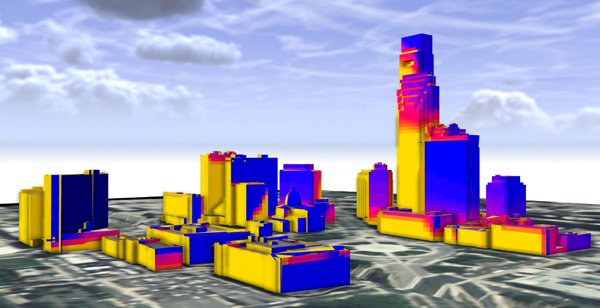
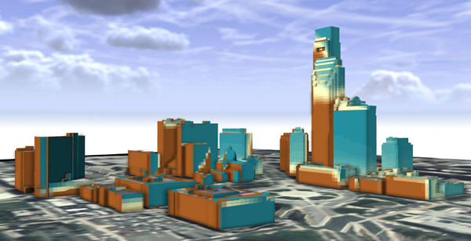

colorRamp
Synopsis
string colorRamp(string gradient, float value)
Parameters
- gradient
Selector for different color ramp presets. Supported values are: "whiteToBlack","greenToRed","yellowToRed","redToBlue","orangeToBlue","brownToBlue","spectrum". - value
A value between 0 and 1.
Returns
Hex color value from a color ramp (selected with gradient) according to the given value. Means the value is mapped on the color ramp and the corresponding color is returned.
Examples
Yellow to red color ramp
@Range(min=0, max=1)
attr colorValue = 1
@StartRule
Shape -->
color ( colorRamp("yellowToRed",colorValue))
To visualize datasets, 'normalize' the values to the [0-1] range with the function " x_norm = 1 / (max - min) * (x - min) ".
Ramp example images based on a GIS dataset
yellow to red :
red to blue :
green to red :

white to black :
orange to blue :
brown to blue :
spectrum :
Copyright ©2008-2018 Esri R&D Center Zurich. All rights reserved.